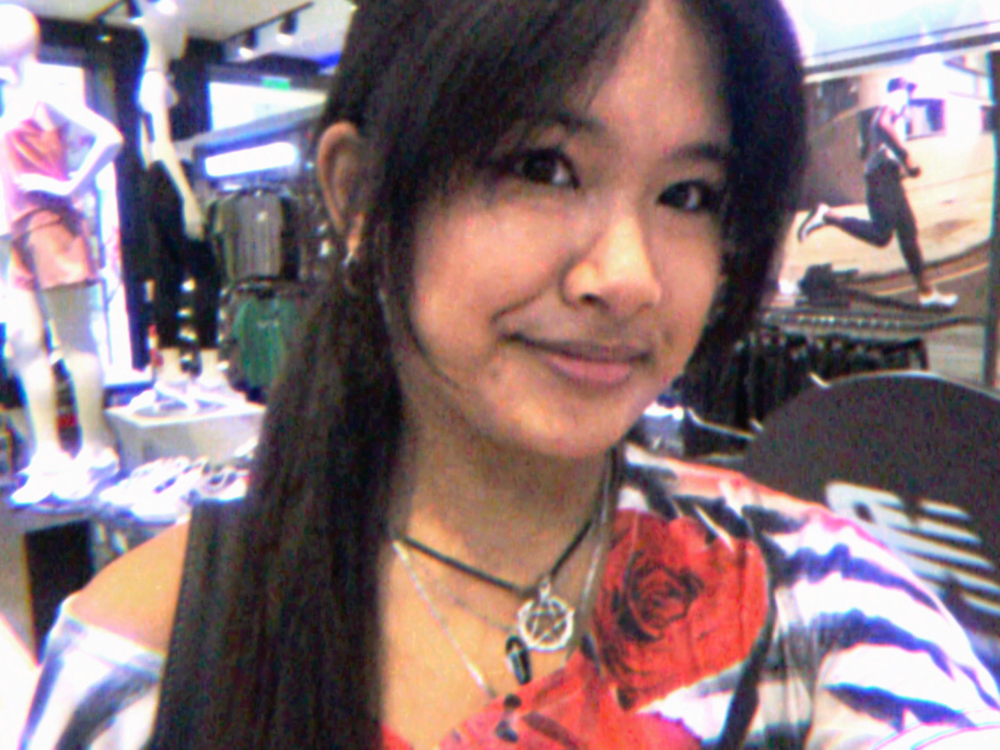
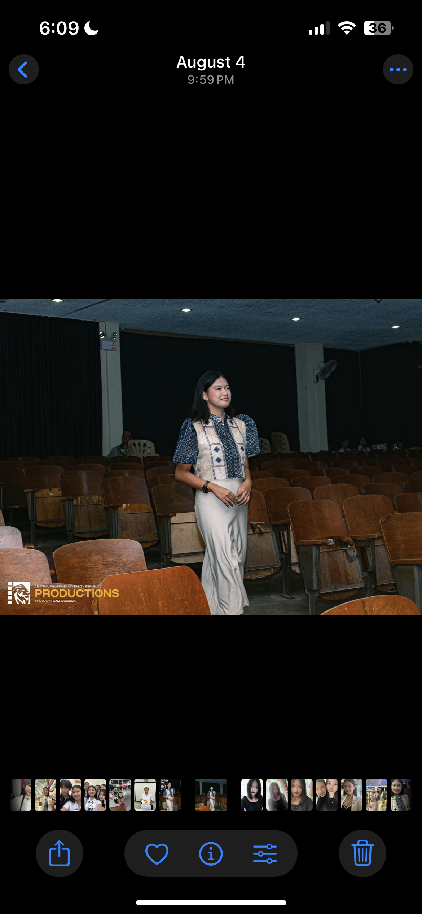
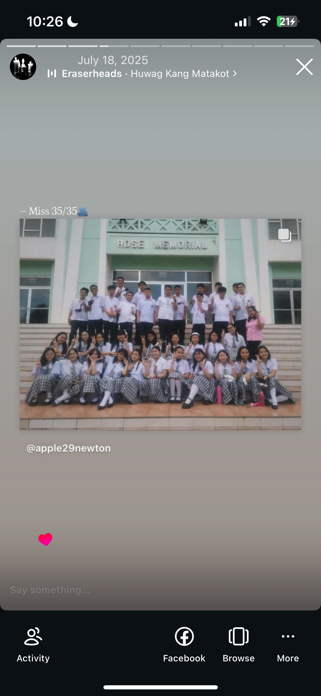

✧˖°.

Jyne 🎀
← Back to Index
Welcome to my profile!!!!! ( ˶°ㅁ°)
Name:
Jannelle Bryanna D. Buensuceso (˶˃𐃷˂˶)
Birthday:
05/27/2010
Council Position:
Board member, Minister of Clubs and Organizations

Favorites:
Batumbakal, SSC 29', and JHSSC 2526'


"The hardest part wasn't losing you, it was learning how to live without you♱ —Bridge to Terabithia"